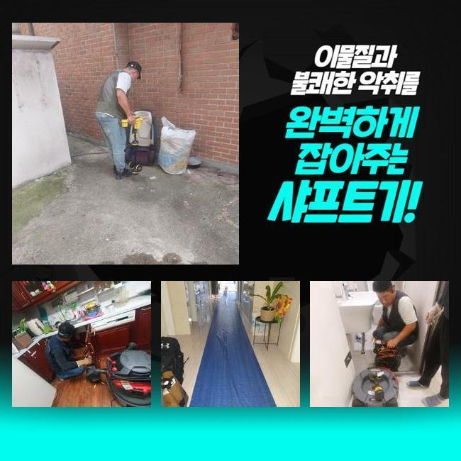
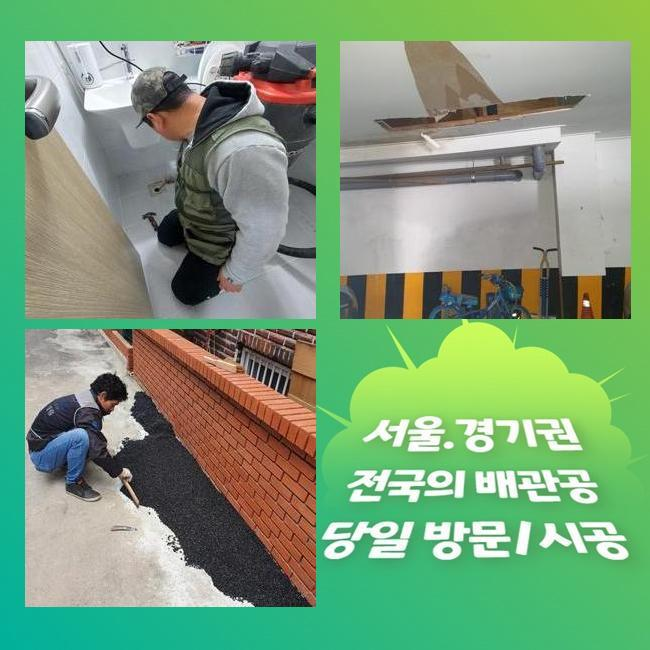
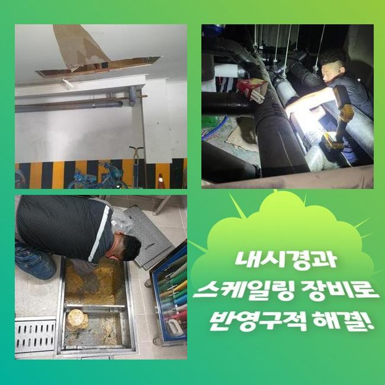
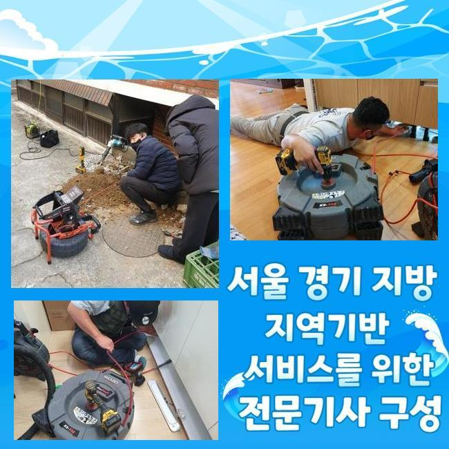
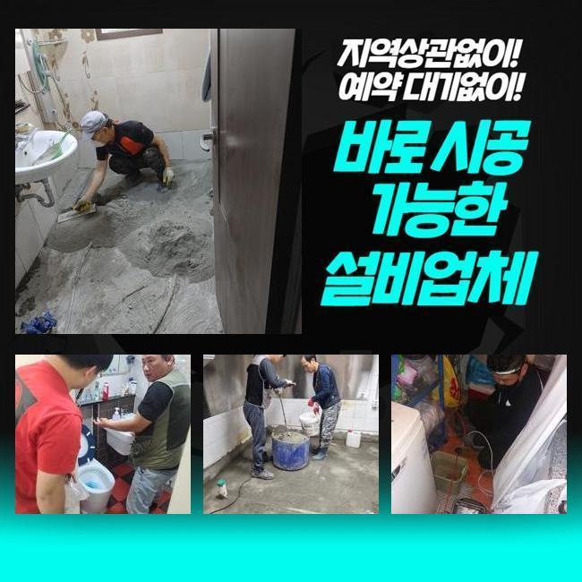

🏠 천안 성성동대변기역류 쌍용2동 배수구뚫기 배관뚫는업체
천안 싱크대막힘 전문 시공 후기

📋 작업 개요
- 위치: 천안
- 서비스 유형: 싱크대막힘, 변기막힘, 하수구막힘, 배관막힘, 누수수리, 역류해결, 뚫는업체, 배관청소, 고압세척
- 작업 일시: 2025. 4. 17. 21:04
- 업체명: 하수구수사대 (010-5615-2118)
🔍 문제 상황
천안 성성동대변기역류 쌍용2동 배수구뚫기 배관뚫는업체
우리들이 자주 이용하게 되는 주방에서 막힘문제가 일어나면 매우 난감하겠지요
저희들이 오늘 시공을 해드렸던 고객분의 집처럼 주방 배관쪽에 생긴 막힘으로 인한 문제등은 기름으로 형성된 슬러지가 원인제공을 하는 현장이 많습니다
의뢰를 받은 고객님의 댁도 동일한 문제였습니다 조리중에 나온 음식기름이 달라붙거나 기름기가 섞인 슬러지등이 쌓이게 되면서 하수구가 막혀버려서 하수가 역류하고 있었습니다
이와같이 오수가 빠지지 못하고 역류하는 일까지 발생했다면 배관이 막혀있는 상황을 검사해봐야해요
막힘문제가 일어난 고객님 댁은 주방에서 오염된 물이 치솟는 상황때문에 하수구 주변까지 엉망으로 되어버린 상태였어요
자세히 살펴보니 입구에 연결이 되어있는 하수관은 이상한 점이 보이지 않았기때문에 안쪽의 지점에서 문제점이 발생했을 거라고 예측 되었습니다
저희 전문진은 고객분께 현재 보이는 문제점을 충분하게 안내해드리고 하부장을 분리하는 작업부터 실시하고 문제의 부위를 해결하기로 했어요
배수구에 흡입기를 연결하여 작업을 이어나갔습니다
하수구에 역류한 침전물을 빼내고 하수관 안쪽으로 차있는 하수를 배출 시켰어요

🔎 원인 분석
💡 전문가 진단: 정밀 진단 장비를 사용하여 슬러지의 고착 여부를 판명하고 타격/세척 작업을 실시했습니다.
위와같은 과정으로 문제를 일으키는 이유가 해결되고 오염수가 치솟는 상황등이 해결되며 배수가 원활해진다면 간편하게 과정들을 마무리 짓게 됩니다
석션장비에 보이는 이물질을 자세하게 살펴보니 막힘문제의 이유가 될만한 것이라고 볼 수가 없없습니다
다음 작업과정은 내시경기기를 배관 속으로 투입하는 방법입니다 노즐선에 붙어있는 카메라를 활용하는 것입니다
좁은 반경도 검사가 가능하도록 만든 내시경기도 물을 빼내지 않았거나 오염물질로 이동 자체가 힘든 경우에는 진행을 할 수 없겠죠
이러한 경우에 사용을 하게되는 석션기계로 내시경의 노즐이 들어갈만한 공간을 확보해서 안쪽의 문제를 파악 할 수 있습니다
내시경 작업으로 문제가 일어난 곳을 자세하게 살펴보니 불순물과 기름덩어리가 엉키면서 만들어진 것으로 보이는 구간을 확인했어요
기름침전물이 처음에는 문제를 일으지키 않지만 몸집이 커질수록 딱딱하게 변형됩니다
오염물질이 말랑한 상태일때 배수관의 모습대로 적재되다가 일시에 하수관을 막아버려 문제가 발생합니다
이럴 때는 전문가의 기술이 필요한 샤프트장비를 활용하여 슬러지를 분쇄하고 석션작업을 실시하고 있습니다
샤프트기기를 이용해서 슬러지를 잘게 쪼개어 분쇄하고 석션을 이용해 흡입하는 방식등을 활용하기도 하죠

🔧 작업 과정
샤프트기기의 끝부분에 달려있는 고리부분에 걸어서 오염물질을 걷어내고 막힌 지점을 통수시키며 작업을 진행하기도 해요
가끔가다가 고객분께서 고압의 세정작업을 알아보시고서 저희들에게 고압청소부터 요청하시는 분도 왕왕 있었습니다
고압기를 이용해서 노폐물을 제거하는 방식으로 청소하면 빠르게 뚫을 수도 있습니다
이러한 방식으로는 하수관에 부담을 줄 수 있는 가능성이 높아지고 밑부분으로 이동한 남은 침전물등이 계속해서 문제상황을 유발시킬 수 있어요
이러한 사고를 철저히 예방하며 차후에도 동일한 문제점이 반복되지 않도록 하는 것이 바람직한 작업방식입니다
장시간이 걸리더라도 정확한 원인부터 찾고 현장에 꼭 필요한 알맞은 시공방법을 고객께 빠짐없이 설명드리고 실시하고 있어요
수도관의 관경에 적합하게 노커 헤드를 선택하고 샤프트기기의 회전력으로 막힌곳을 뚫는 과정은 배수관이 손상을 입지 않도록 많은 경험이 있는 전문 기술진이 실시해야만 해요
내시경장비로 배관의 안쪽을 확인하면서 작업했기때문에 피해없이 작업과정을 마무리 지었으며 탈거를 해놓았던 하부장도 완전하게 복구 해드렸어요
일반가정집은 바닥에 방수등을 하지않기 때문에 물이 많이 새서 문제가 생긴 경우에는 밑에집까지 피해가 이어질 수 있습니다
싱크대 근방에 물이 많이 넘쳐흐른 현장이 아니였으나 밑에층까지 누수가 번지지 않으려면 전문진을 통해서 빠른 대처를 하시는게 안전합니다
마무리를 하기 전에 내시경기기를 활용하여 배수관의 불순물 청소가 깨끗하게 진행된건지 다시 한번 살펴보았습니다
내시경 카메라로 하수구 내부에 눈에 보이는 크랙이 있는지 빠짐없이 살펴봐요
고객분께선 막힘으로 인한 문제점을 확인하신 후에 바로 저희 전문 기술진에게 전화주셨어요
의뢰인의 신속정확한 대처 덕분에 아랫층의 기타 다른 문제나 누수등의 이슈없이 현장을 마무리 지을 수 있었어요
막힘문제와 같은 일이 발생하면 외부의 도움없이 처리해보기 위해서 산성약품을 이용하시거나 직접 분리를 해보시는 등의 위험한 경우가 많아요
하수구 역류는 전문장비 없이 자체적으로는 해결을 하신다는게 쉽지않기 때문에 전문진에게 문의 전화를 해보시는 것이 중요합니다


✅ 작업 완료
일상에서 싱크대는 주기를 정해서 세척 해주시고 간단한 주의사항을 알려드리고 있어요
흡입작업을 끝낸 후에 개수대의 부속품들을 정상적으로 결속시키고 배수과 원활한지 확인 해보았습니다
검사를 진행해보니 물이 강하게 잘 흘러가서 문제없이 시공되었다는 것을 확인할 수 있었어요
이번처럼 하수구 역류사태로 곤란하신 경우라면 지금 바로 저희 전문 기술진에게 문의 해주세요!
신속한 출동과 문제상황을 처리 할 수 있는 전문기술로 최선을 다해 임하겠습니다


⚠️ 베란다 누수 및 방수 관리 방법
- ✅ 비가 많이 올 때 창틀 주변이나 아래층 천장에 얼룩이 생기는지 정기적으로 확인해 보세요.
- ✅ 우수관 주변 실리콘 마감이 들뜨거나 깨진 틈새가 있는지 손상 여부를 수시로 체크하세요.
- ✅ 베란다 바닥 타일의 줄눈(메지)이 소실되면 그 틈으로 물이 침투하여 누수가 유발됩니다.
- ✅ 누수 의심 증상 발견 시 방치하면 아래층 손실이 커지므로 즉시 전문가의 진단을 받으십시오.
💡 핵심 정리
- 확실한 장비 작업(내시경 점검 및 샤프트 스케일링)으로 원인을 뿌리 뽑습니다.
- 작업 후 1년 이내에 동일한 부위 재발 시 100% 무상 A/S 서비스를 보장합니다.
- 서울 · 경기 · 인천 전 지역에 24시간 언제든 긴급 출동할 수 있도록 항시 대기 중입니다.
❓ 자주 묻는 질문 (FAQ)
🚨 천안 싱크대막힘 문제로 고민이신가요?
정확한 원인 진단과 확실한 시공으로 재발 없는 해결을 약속드립니다.
24시간 긴급 출동 | 서울 · 경기 · 인천 전지역 | 1년 내 재발 시 무상 A/S